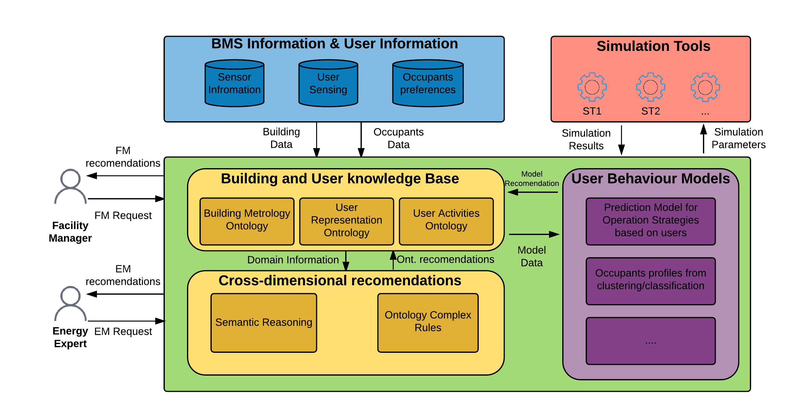
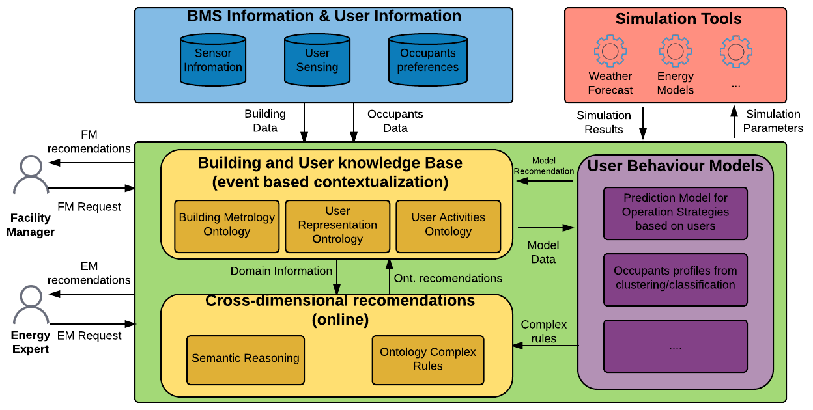

User Behavioural Module Idea and Approach
Aitor Corchero & Regina Enrich

This work is licensed under a Creative Commons Attribution-ShareAlike 4.0 International License.
Content
- Introduction to User Behaviour Module
- Main Ideas to be accomplished
- Architecture Design
- Technology to be applied
- Main Conclusion
Introduction to User Behaviour
DoW Description
The main goal of the module is to capture occupants' behaviour and weather forecasting relavant to the building usage strategy
For that, the user behaviour will collect data from:
- Data Sources such as mobile phones, smart devices, occupants' preferences and weather forecast services
- Information modelling (ontologies)
- Detection of relevant events (usage of data analytics)
DoW Task Description
This task will design a framework for user behavior modelling, monitoring and communication.
- Modelling
- Behavioural modelling scheme
- User Communication (Task 1.6)
- Monitoring
- Indoor Conditions Change (e.g thermostat settings)
- Usage of natural ventilation (windows opening) vs HVAC
- Lighting Efficiency (e.g light swich on when nobody is on the room)
- Communication
- User Communication (Task 1.6)
Intial ideas from API (Nikos)
More ideas over the video
- Align with comfort parameters
- Input from Questionaires for user feedbacking
- Standards Compliance
Other ideas from mails...
- Modular Approachbased on event-driven
- Real-time actuation over the building
- Identification and remediation of complex behaviour events
- Energy inefficiencies meanwhile the user comfort is mainteaned or enhanced
User behaviour Architecture
Inital Architecture
Updated Architecture
Strategy
- Define a Common User Behaviour Module (common vision)
- Start with a Simple events detection (real-time)
- Complex event detection (identification of complex rules at real-time)
Technology
- Event-Detection:ESPER+CSPARQL+other??
- Semantic Modeling:JENA+ (SPIN or SWRL)/li>
- Data Mining/Pattern Recognition:WEKA or Rapidminer or R
- General Environment:JAVA??
Open Discussion
Thank you very much!!!